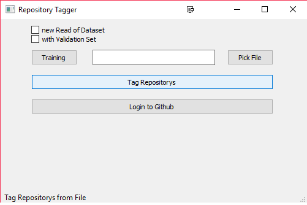
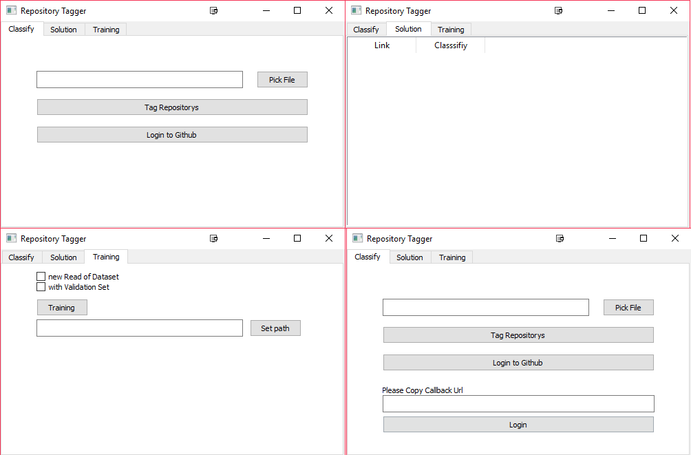
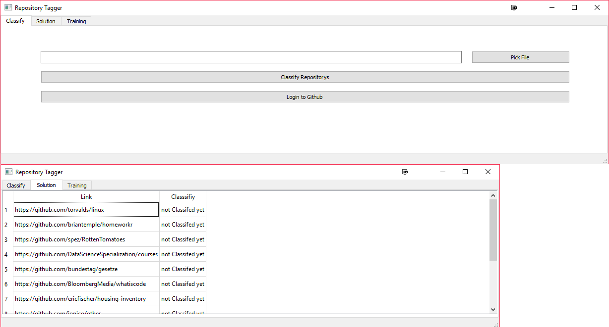

Results¶
In this section we will describe the development of our GUI and the changes we made to the datafetching process.
Userinterface¶
In this section we will describe step by step the development of our userinterface.
At the begin the interface should have basic functionality. This means you can just start a training without any additional features.
To hide additional information we used a status bar which presents additional information as seen in this picture:
Also to get more control over the training, 2 checkboxes were added.
If you want to classify more then two repositories you need to be logged in. That’s why we added an additional input for the callback URL. The login button opens the brower with the login link. The user just has to copy it into the input field. With the different tabs we could provide more information and give a better overview about the different tasks our network can perform.
Some problems are still remaining. The solution tab has to be opened by the user. Additionally this is only possible when the task has finished because the application has only a single thread. So the window is also only refreshing after an explicit call from the PyQt API.
Another problem was that resizing the window would cause the items in it to destroy the layout. We added the functionality to resize the window without destroying the layout, but it is still only possible to resize the width. There are now way more options to specify the directories and files you want to use.
Fetch data¶
At the begging of our project the data was fetched by a C# application which used Octokit.Net. The whole unlabeled dataset was fetched by this application. The program can be found in the GetData directory. The application did the following tasks:
- Check state -> either uses the last fetched id or starts from the beginning.
2. Check if the next id can be used to fetch data. 2.1 If not send a HTTP Request 3. Load the data we need from different parts of the API -> 6 different API endpoints were called to get all data some of them multiple to get more data 4. create a json document from the data
With every run of the program we get 100 repositories. To get the critical amount of data needed for a neural network we needed a lot of time. Because the GitHub API only allows 5000 requests per hour. We need up to 7 requests for every repository.
At the end we fetch 31.7k id’s. We tested every id from 1 to 110.000. Every third was a public and not deleted repository. To get this amount of data it needs a minimum of 46 hours.
Later we added a new feature: It is possible to give the program a list of id’s and the application fetches the data and returns the found repositories.
As our project we decided that our program should work platform independently. But net.core hasn’t any support for linux. Additionally most of the project code was already written in python. It was easier to integrate another python module then a C# application.
For python doesn’t exist any official GitHub API wrapper only unofficial ones. That is problematic because they are more difficult to use and often badly commented. A nice solution was to use OAuth2 with ‘Requests’.
The first fetch results weren’t useable because they were different from the one the C# application has created. To guaranty compatibility with our previously fetched data we implemented a extra function which fixes this problem. This process uses just the stringbuilder and the unprocessed JSON. At the end the JSON could be used with json.dump without any problem.
Another problem that we had to handle without any API support were the 403 and 404 http responses. These would lead to uninitialized or wrong variable values.
Additionally we could only fetch 100 repositories in one call. With the old program we could get up to 1000. But because we had already the majority of our data these disadvantages weren’t a problem. Instead we it was easier to implement it into our already existing program.